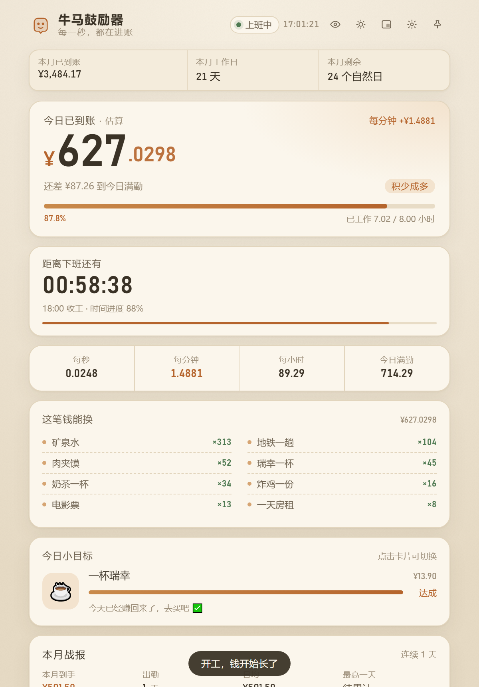
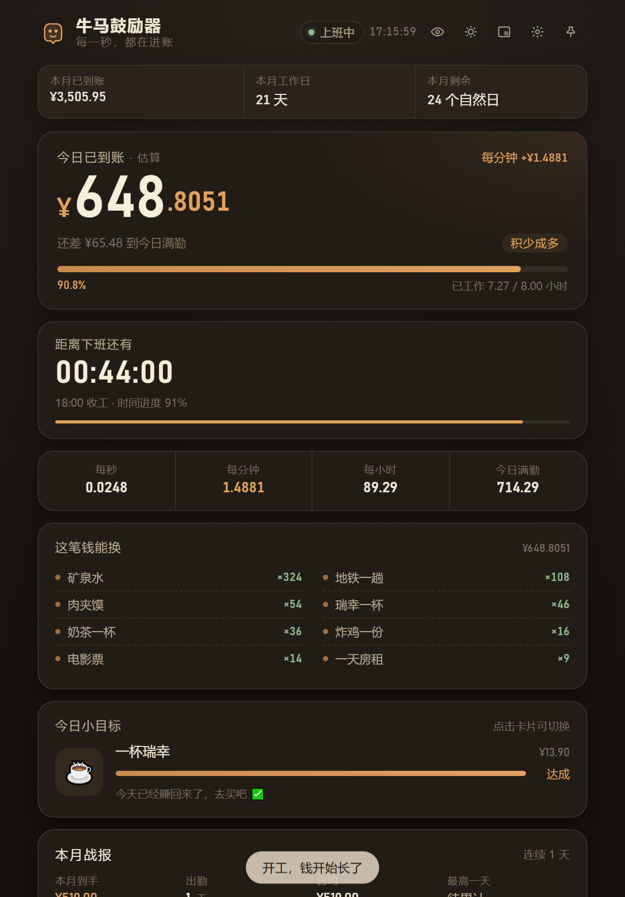
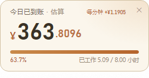
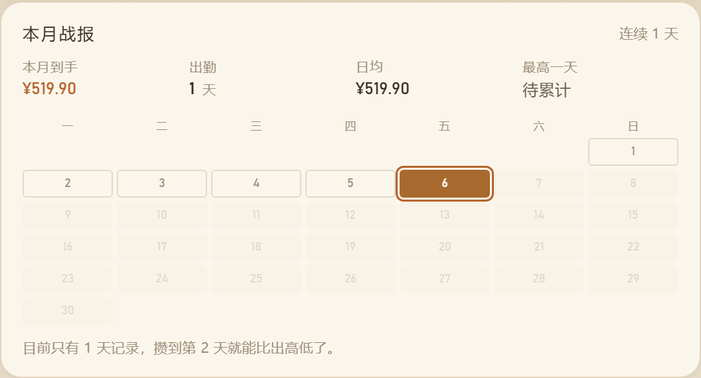

工资按月发，班是一秒一秒上的。这个工具把那笔钱拆回每一秒， 让屏幕上的数字跟着你的工作时间一起长 —— 顺便记下你这个月到底干了多少。
都不是刚需，但每一件都能让上班这件事轻一点。
今日已到账精确到毫秒，金额可以显示 2 / 3 / 4 / 6 位小数。午休和晚饭自动停表，休息结束无缝续算。
精确到秒，进度条和工时同步。夜班跨零点也不会算错 —— 凌晨两点接着前一晚那班累计，不会归零。
每天自动记一笔，形成本月日历热力图。本月到手、出勤天数、日均、最高一天，还有连续打卡天数。
农历、干支、宜忌、黄道吉日。术语都翻成了白话：嫁娶→结婚、开市→开张/启动新项目，安葬破土这类不出现。
250×132 的小窗，置顶、可拖动、可缩放，双击回主面板。放在屏幕角落不占地方。
所有金额模糊化，只留进度和倒计时。老板路过的时候不用急着切窗口。
耳机、手机、MacBook、一趟旅行。显示今天干完能不能拿下，拿不下还差几个工作日。
配置和打卡记录只存在你自己的电脑上，零网络请求。导出的 JSON 连打卡记录一起带走。
实际渲染截图，不是设计稿。




没有黑箱，四步算术。所有数字都是按你自己填的薪资和作息估的。
夜班（比如 22:00 上班、次日 06:00 下班）在凌晨时段会接着前一晚那一班继续累计； 下班后归零，当晚再开新的一班，不会跨天重复计。
Windows 直接下载安装包；macOS / Linux 可以自己编译，也可以用网页版。
| 下载哪个 | 区别 |
|---|---|
WorkEncourager-Setup-x.y.z.exe |
安装版，带卸载程序，可以在「设置 → 应用」里正常卸载 |
WorkEncourager-Portable-x.y.z.exe |
便携版，不写注册表，放 U 盘里也能跑 |
安装包没有做代码签名，Windows SmartScreen 可能提示「未知发布者」。 点「更多信息 → 仍要运行」即可。源码在 GitHub 上，可以自己核对再编译。